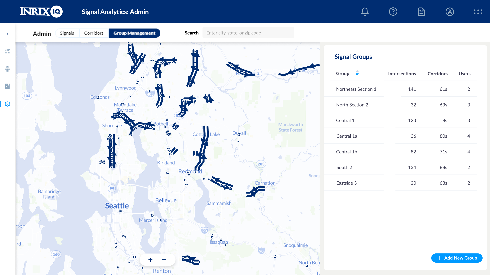
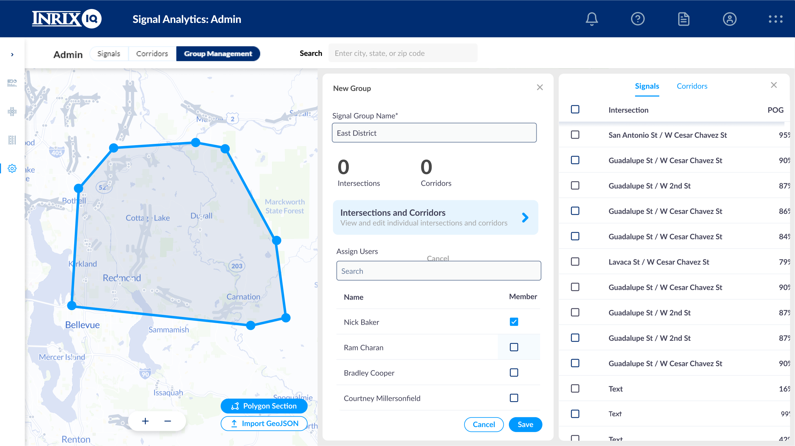
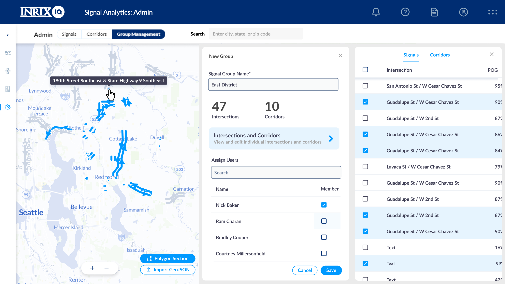

INRIX Groups
Our customers needed a simple way to segment their data and assign them to individuals or groups of individuals in their organization. Given that our data is map based, it made sense to make that the primary display for this project. Users could draw their own regions, encircling whichever data points they saw fit or import existing geometry via json. Importing in this way is common and most customers have predefined regions like this.
I was the sole designer on this project. I worked directly with the Product Manager and engineers to get this product through to launch.
During the project, we ran into a fairly large problem. The way our map pulls and displays data didn’t allow us to create multiple states for regions. So something as simple as changing color on hover became an issue we couldn’t resolve without significant engineering work. Luckily, I was working with a badass and we pushed to make the time to address the issue. Eventually we had the right solution and things were working clearly and as intended. This was a great example of why sometimes pushing a deadline, though frustrating, can be worth it and result in an improvement that can be used for multiple features.
User creates a new group from existing intersections and corridors
User draws a region (or uploads) and confirms org users who have access
Intersections and Corridor list is confirmed and group is created